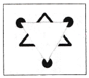
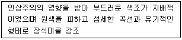
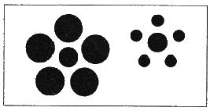
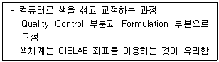
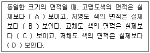
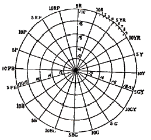
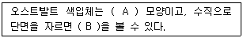
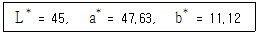
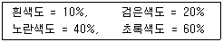

컬러리스트기사 (2019-04-27 기출문제)
1과목: 색채심리 마케팅
1. 색채와 공감각에 대한 설명으로 틀린 것은?
- 일반적으로 식욕을 돋우어 주는 색은 파랑, 보라 계열이다.
- 재료 및 표면처리 등에 의해 색채와 촉감의 감성적 메시지가 전달될 수 있다.
- 색청은 어떤 소리를 듣게 되면 색이나 빛이 눈앞에 떠오르는 현상을 의미한다.
- 공감각은 하나의 자극으로 인해 서로 다른 감각이 동시에 발생하는 것이다.
(정답률: 87%)

2. 색채심리와 그 사례에 대한 설명으로 틀린 것은?
- 보색 대비 - 초록색 상추위에 붉은 음식을 올리니 음식 색깔이 더 붉고 먹음직하게 보였다.
- 면적 효과 - 좁은 거실 벽에 어두운 회색 페인트를 칠하고 어두운 나무색 가구들을 배치했더니 더 넓어 보였다.
- 중량감 - 크고 무거운 책에 밝고 연한색으로 표지를 적용했더니 가벼워 보였다.
- 경연감 - 가벼운 플라스틱 의자에 진한 청색을 칠했더니 견고하게 보였다.
(정답률: 90%)
3. 색채조사에 있어 설문지의 첫머리에는 어떤 내용이 들어가는 것이 좋은가?
- 성명, 주소, 직장
- 조사의 취지
- 성별, 연령
- 개인의 소득이나 종교
(정답률: 81%)
4. 소비자 행동측면에서 살펴볼 때 국내기업이 라이센스비용을 지불하면서도 외국기업의 유명 브랜드를 들여오는 가장 큰 이유는?
- 일반적으로 소비자들이 유명하지 않은 상표보다는 유명한 상표에 자신의 충성도를 이전시킬 가능성이 높기 때문
- 해외 브랜드는 소비자 마케팅이 수월하기 때문
- 국내 브랜드에는 라이센스의 다양한 종류가 없기 때문
- 외국 브랜드 이름에서 오는 이미지로 인해 소비자 행동이 이루어지기 때문
(정답률: 69%)
5. 색채 선호도에 관한 설명 중 틀린 것은?
- 색채 선호도는 주로 SD법을 활용하여 조사한다.
- 색채 선호도는 개인차가 있다.
- 색채 선호도 조사에서 성별에 따른 차이는 크지 않다.
- 특정문화에서 선호되는 색채는 마케팅에 활용될 수 있다.
(정답률: 88%)
6. 제품수명주기에 따른 제품의 색채계획에 대한 설명이 옳은 것은?
- 도입기에는 시장저항이 강하고 소비자들이 시험적으로 사용하는 시기이므로 제품의 의미론적 해결을 위한 다양한 색채로 호기심을 유도하는 것이 좋다.
- 성장기에는 기술개발이 경쟁적으로 나타나는 시기이므로 기능주의적 성격이 드러나는 무채색을 사용하는 것이 좋다.
- 성숙기에는 기능주의에서 표현주의로 이동하는 시기이므로 세분화된 시장에 맞는 색채의 세분화와 다양화가 이루어져야 한다.
- 쇠퇴기는 더 이상 기술개발이 이루어지지 않으므로 화려한 색채를 사용하여 주의를 환기하는 것이 좋다.
(정답률: 52%)
7. 고채도 난색의 특성에 대한 설명으로 틀린 것은?
- 동적임
- 무거움
- 가까움
- 유목성이 높음
(정답률: 75%)
8. 색채의 기능적 역할과 활용에 대한 설명으로 틀린 것은?
- 물리적, 화학적 온도감을 조절한다.
- 기분이나 감정 상태를 조절하는데 도움을 준다.
- 기능이나 목적을 알기 쉽게 한다.
- 비상구의 표시나 도로의 방향 표시 등 순서, 방향을 효과적으로 유도한다.
(정답률: 80%)
9. 기업이 표적시장을 대상으로 원하는 결과를 얻을 수 있도록 활용하는 총체적인 마케팅 수단은?
- 표적 마케팅
- 시장 세분화
- 마케팅 믹스
- 제품 포지셔닝
(정답률: 46%)
10. 색채와 후각의 관계에 대한 설명이 틀린 것은?
- 가볍고 은은한 느낌의 향기를 경험하기 위한 제품에는 빨강이나 검정 포장을 사용한다.
- 시시원한 향, 달콤한 향으로 구분되는 향의 감각은 특정 색채로 연상될 수 있다.
- 신선한 느낌의 향기는 주로 파랑, 청록, 초록계열에서 경험할 수 있다.
- 꽃향기(Floral)는 자주, 빨강, 보라색 계열에서 경험할 수 있다.
(정답률: 91%)
11. 색채마케팅 중 제품 포지셔닝(positioning)에 대한 설명 중 틀린 것은?
- 소비자들은 특정 제품의 포지셔닝을 이해하면 구매를 망설이게 된다.
- 경쟁적인 우위를 확보할 수 있는 적절한 이점을 선정한다.
- 자사의 포지셔닝 콘셉트를 효과적으로 실행하여야 한다.
- 모든 잠재적인 경쟁적 이점을 확인한다.
(정답률: 86%)
12. 색채의 심리적 의미 대응이 옳은 것은?
- 난색 – 냉담
- 한색 - 진정
- 난색 – 침착
- 한색 - 활동
(정답률: 83%)
13. 한 나라를 상징하는 국기는 그 나라의 풍초, 역사, 지리, 문화 등을 반영한다. 다음의 국기에 관한 설명 중 옳은 것은?
- 태극기의 흰색은 단일민족의 순수함과 깨끗함, 파란색과 빨간색은 분단된 민족의 통일에 대한 염원을 의미한다.
- 각 국의 국기에서 대표적으로 사용되는 색중 검정색은 고난, 의지, 역사의 암흑시대 등을 의미한다.
- 독일, 오스트리아, 이탈리아, 프랑스 등은 3가지 색을 가로 또는 세로로 배열해 놓은 비콜로 배색을 국기에 사용된다.
- 각국의 국기가 상징하는 색 중 빨간색은 독립을 위한 조상의 피, 번영, 국부, 희망, 자유, 아름다움, 정열 등을 의미한다.
(정답률: 29%)
14. 마케팅의 핵심 개념에 해당하지 않는 것은?
- 욕구
- 시장
- 제품
- 지위
(정답률: 90%)
15. 다음 중 주로 사용되는 색채 조사방법이 아닌 것은?
- 개별 면접조사
- 전화 조사
- 우편 조사
- 집락표본추출법
(정답률: 45%)
16. 소비자 구매에 대한 설명 중 틀린 것은?
- 구매는 일종의 의사결정 과정이다.
- 구매의사결정 과정은 누구나 동일하다.
- 구매결정과정은 그 합리성 여부에 따라 합리적 과정과 비합리적 과정으로 나뉜다.
- 구매결정은 평가의 결과 최선책을 선택하는 것이 일반적이나 반드시 구매와 연관되는 것은 아니다.
(정답률: 91%)
17. 색채마케팅에 대한 설명으로 옳지 않은 것은?
- 대중이 특정 색채를 좋아하도록 유도하여 브랜드 또는 제품의 가치를 높이는 것
- 색채의 이미지나 연상 작용을 브랜드와 결합하여 소비를 유도하는 것
- 생산단계에서 색채를 핵심 요소로 하여 제품을 개발하는 것
- 새로운 컬러를 제안하거나 유행색을 창조해나가는 총체적인 활동
(정답률: 54%)
18. 색채 정보수집 설문지 조사를 위한 조사자 사전교육에 관한 내용과 가장 거리가 먼 것은?
- 조사의 취지와 표본 선정 방법에 대한 이해
- 조사자료 분석 연구에 대한 이해
- 면접과정의 지침
- 참가자의 응답에 영향을 주지 않도록 중립적이고 객관적인 태도 유지
(정답률: 52%)
19. 소비자 행동의 기본원칙에 대한 설명 중 틀린 것은?
- 소비자는 자주적이라 제품이나 서비스도 소비자의 욕구, 라이프 스타일과의 관련 정도에 따라 받아들이거나 거부한다.
- 소비자 행동에 영향을 미치는 내적 동기나 사회적 영향요인 등은 예측할 수 없다.
- 소비자의 욕구에 맞추어 제품이나 서비스를 설계하면 소비자 행동에 영향을 줄 수 있다.
- 기업은 부적절한 방법으로 소비자에 대한 영향력을 행사해서는 안된다.
(정답률: 76%)
20. 시장세분화의 기준이 틀린 것은?
- 지리적 속성 - 지역, 인구밀도, 기후
- 심지분석적 속성 - 상표 충성도, 구매동기
- 인구통계적 속성 - 성별, 연령, 국적
- 행동분석적 속성 - 사용량, 사용장소, 사용시기
(정답률: 57%)
2과목: 색채디자인
21. 빅터 파파넥이 규정지은 복합기능에 속하지 않는 것은?
- 방법
- 형태
- 미학
- 용도
(정답률: 31%)
22. 그리스어인 rheo(흐르다)에서 나온 말로, 유사한 요소가 반복 배열되어 연속할 때 생겨나는 것으로서 음악, 무용, 영화 등의 예술에서도 중요한 원리가 되는 것은?
- 균형
- 리듬
- 강조
- 조화
(정답률: 83%)
23. 인터랙티브 아트(Interactive art)의 특성으로 가장 옳은 것은?
- 정보를 한 방향에서가 아닌 상호작용으로 주고 받는 것
- 컴퓨터가 만드는 가상세계 또는 그 기술을 지칭하는 것
- 문자, 그래픽, 사운드, 애니메이션과 비디오를 결합한 것
- 그래픽에 시간의 축을 더한 것으로 연속적으로 움직이는 것과 같은 이미지를 제작하는 것
(정답률: 65%)
24. 그림과 관련한 게슈탈트 이론은?

- 근접성(proximity)
- 유사성(similarity)
- 폐쇄성(enclosure)
- 연속성(continuity)
(정답률: 61%)
25. 보기에서 설명하는 디자인 사조는?

- 다다이즘
- 아르누보
- 포스트모더니즘
- 아르데코
(정답률: 72%)
26. 제품의 색채 계획 중 기획단계에서 해야 할 것이 아닌 것은?
- 주조색, 보조색 결정
- 시장과 소비자조사
- 색채 정보 분석
- 제품기획
(정답률: 49%)
27. 포스트모더니즘 디자인 양식의 특징이 아닌 것은?
- 이전까지는 금기시한 다양한 사고와 소재를 사용하였다.
- 문화적 다양성의 가치를 인정하였다.
- 화려한 색상과 장식을 볼 수 있다.
- 미술과 디자인의 구별을 확실히 하였다.
(정답률: 66%)
28. 환경오염문제와 관련하여 생태학적인 건강을 유지하며, 환경에 피해를 주지 않는 디자인을 뜻하는 것은?
- 그린(Green) 디자인
- 퍼블릭(Public) 디자인
- 유니버셜(Universal) 디자인
- 유비쿼터스(Ubiquitous) 디자인
(정답률: 80%)
29. 르 꼬르뷔제의 이론과 그의 사상에서 가장 중요시한 것은?
- 미의 추구와 이론의 바탕을 치수에 관한 모듈(module)에 두었다.
- 근대 기술의 긍정적인 면을 받아들이고, 개성적인 공예가 되어야한다고 주장하였다.
- 새로운 건축술의 확립과 교육에 전념하여 근대적인 건축공간의 원리를 세웠다.
- 사진을 이용한 방법으로 새로운 조형의 표현 수단을 제시하였다.
(정답률: 54%)
30. 시대와 패션 색채의 변천이 바르게 연결된 것은?
- 1900년대는 밝고 선명한 색조의 오렌지, 노랑, 청록이 주조를 이루었다.
- 1910년대는 흑색, 원색과 금속의 광택이 등장하였다.
- 1920년대는 연한 파스텔 색조가 유행했다.
- 1930년대 중반부터는 녹청색, 뷰 로즈, 커피색 등이 사용되었다.
(정답률: 40%)
31. 화학실험실에서 사용하는 가스 종류에 따라 용기의 색을 다르게 사용하는 것과 관련된 색채원리는?
- 색의 현시
- 색의 상징
- 색의 혼합
- 색의 대비
(정답률: 69%)
32. 1880년대 영국에서 일어난 미술공예운동의 대표인물은?
- 발터 그로피우스
- 헤르만 무지테우스
- 요하네스 이텐
- 윌리엄 모리스
(정답률: 72%)
33. 두 개체 간의 사용편이성에 초점을 맞춘 커뮤니케이션에 중요한 역할을 하는 디자인 분야는?
- 애드밴스(Advanced) 디자인
- 오가닉(Organic) 디자인
- 인터페이스(Interface) 디자인
- 얼터너티브(Alternative) 디자인
(정답률: 80%)
34. 미용디자인과 색채에 대한 설명 중 틀린 것은?
- 미용디자인은 개인의 미적 요구를 맞족시키고, 보건 위생상 안전해야 하며 유행을 고려해야 한다.
- 미용디자인의 범위는 일반적으로 헤어스타일, 메이크업 네일케어, 스킨케어 등이다.
- 외적 표현수단으로서의 퍼스널 컬러(Personal Color)는 매우 중요한 미용디자인의 한 부분이다.
- 미용디자인의 소재는 인체 일부분으로 색채효과는 개인차 없이 항상 동일하게 나타난다는 것을 감안해야 한다.
(정답률: 91%)
35. 디자인 사조와 관련된 작가 또는 작품과의 연결이 틀린 것은?
- 아르누보 - 빅토르 오르타(Victor Horta)
- 데스틸 - 적청(Red and Blue) 의자
- 큐비즘 - 파블로 피카소(Pablo Picasso)
- 아르데코 - 구겐하임(Guggenheim) 박물관
(정답률: 42%)
36. TV 광고 매체의 특성이 아닌 것은?
- 소구력이 강하며 즉효성이 있으나 오락적으로 흐를 수 있다.
- 화면과 시간상 충분한 설명이 가능하다.
- 반복효과가 크나 총체적 비용이 많이 든다.
- 메시지의 반복이나 집중공략이 가능하다.
(정답률: 75%)
37. 그림에서 큰 원에 둘러싸인 중심의 원과 작은 원에 둘러싸인 중심의 원이 동일한 크기이지만 다르게 보이는 이유는?

- 길이의 착시
- 형태의 착시
- 방향의 착시
- 크기의 착시
(정답률: 82%)
38. 다음의 두 가지가 대비의 개념을 갖지 않는 것은?
- 직선 – 곡선
- 청색 - 녹색
- 투명 – 불투명
- 두꺼움 - 얇음
(정답률: 89%)
39. 디자인에 있어 심미성에 관한 설명으로 옳은 것은?
- 디자인의 목적에 합당한 수단으로 디자인을 성취하였는가에 관한 기준이다.
- 디자인이 사회적 차원에서 이루어질 때 디자인의 개념화와 제작과정 수준을 평가하는 기준이다.
- 디자인에 기대되는 물리적 기능을 잘 수행하는가를 평가하는 항목이다.
- 디자인에서 드러나는 스타일(양식), 유행, 민족성, 시대성, 개성 등이 복합적으로 반영된 내용이라고 할 수 있다.
(정답률: 83%)
40. 다음 중 색채계획에 사용되는 방법이 아닌 것은?
- 소비자 색채 설문조사
- 시네틱스법
- 소비자 제품 이미지 조사
- 이미지 스케일
(정답률: 51%)
3과목: 색채관리
41. 무기안료의 색별 연결로 잘못 짝지어진 것은?
- 백색 안료 : 산화아연, 산화티탄, 연백
- 녹색 안료 : 벵갈라, 버밀리온
- 청색 안료 : 프러시안블루, 코발트청
- 황색 안료 : 황연, 황토, 카드뮴옐로
(정답률: 75%)
42. 다음 중 ICC 컬러 프로파일이 담고 있는 정보로 가장 거리가 먼 것은?
- 다이나믹 레인지
- 색역
- 색차
- 톤응답특성
(정답률: 23%)
43. 색채 측정기에 대한 설명으로 옳은 것은?
- 색채계는 분광 방사율을 측정하는데 사용한다.
- 분광 복사계는 장비 내부에 광원을 포함해야 한다.
- 분광기는 회절격자, 프리즘, 간섭 필터 등을 사용한다.
- 45˚ : 0˚방식을 사용하는 색채 측정기는 적분구를 사용한다.
(정답률: 43%)
44. 색료가 선택되면 그 색료를 배합하여 조색할 수 있는 색채의 범위가 정해진다. 색영역은 이론적인 것으로부터 현실적인 단계로 내려올수록 점점 축소되는데, 다음 중 색영역을 축소시키는 것과 가장 관련이 적은 것은?
- 주어진 명도에서 가능한 색영역
- 표면반사에 의한 어두운 색의 한계
- 경제성에 의한 한계
- 시간경과에 따른 탈색현상
(정답률: 40%)
45. 색채관리에 대한 설명으로 틀린 것은?
- 색채관리의 범위는 측정, 표준정량화, 기록, 전달, 보관 재현, 생산효율화를 목적으로 하는 전 과정이다.
- 기록단계에서는 수치적 적용으로 색채가 감성이 아닌 양적측정이 되므로 다수의 측정으로 인한 정확성을 기해야 한다.
- 보관단계는 색채샘플 및 표준품을 보관하는 단계로 실제 제품의 색채를 유지하기 위한 단계이다.
- 생산단계는 색채를 수치가 아닌 실제 소재를 이용하여 기준색을 조밀하게 조색하는 단계로 색채의 오차측정 허용치 결정 등 다수의 과학적인 과정이 수반된다.
(정답률: 32%)
46. 인공주광 D50을 이용한 부스에서의 색 비교와 관련한 설명으로 잘못된 것은?
- 인쇄물, 사진 등의 표면색을 비교하는 경우 사용한다.
- 주광 D50과 상대분광분포에 근사하는 상용광원 D50을 사용한다.
- 상용광원 D50의 성능 평가 시 연색성 평가에는 주광 D65를 사용한다.
- 자외부의 복사에 의해 생기는 형광을 포함하지 않는 표면색을 비교하는 경우 상용광원 D50은 형광 조건 등식지수 MIuv의 성능수준을 충족시키지 않아도 된다.
(정답률: 31%)
47. 광원색의 측정시 사용하는 주사형 분광복사계에 대한 설명으로 가장 거리가 먼 것은?
- 분광복사조도, 분광복사선속, 분광복사휘도 등과 같은 분광복사량의 측정을 위해 만들어진 측정기기이다.
- 입력광학계, 주사형 단색화장치, 광검출기와 신호처리 및 디지털 기록장치 등으로 구성되어 있다.
- 회절격자를 사용하는 경우 고차회절에 의한 떠돌이광을 제거하기 위해 고차회절광을 차단할 수단이 마련되어 있어야 한다.
- CCD 이미지 센서, CMOS 이미지 센서를 주요 광검출기로 사용한다.
(정답률: 35%)
48. 다음의 설명에 해당하는 것으로 가장 알맞은 것은?

- CMM
- QCF
- CCM
- LAB
(정답률: 68%)
49. 다음 중 물체의 색을 가장 정확하게 계산할 수 있는 것은?
- 물체의 시감 반사율
- 물체의 분광 파장폭
- 물체의 분광 반사율
- 물체의 시감 투과율
(정답률: 76%)
50. 기준색의 CIELAB 좌표가 (58,30,0)이고, 샘플색의 좌표는 (50,20,-10)이다. 샘플색은 기준색에 비하여 어떠한가?
- 기준색보다 약간 밝다.
- 기준색보다 붉은기를 더 띤다.
- 기준색보다 노란기를 더 띤다.
- 기준색보다 청록기를 더 띤다.
(정답률: 69%)
51. 채널당 10 비트 RGB 모니터의 경우 구현할 수 있는 최대색은?
- 256×256×256
- 128×128×128
- 1024×1024×1024
- 512×512×512
(정답률: 56%)
52. CCM의 기본원리에 대하여 옳게 설명한 것은?(오류 신고가 접수된 문제입니다. 반드시 정답과 해설을 확인하시기 바랍니다.)
- 색소의 단위 농도 당 반사율의 변화를 연결 짓는 과정에서 Kubelks-Munk 이론을 적용한다.
- 색소가 소재에 비하여 미미한 산란 특성을 갖는 경우(예: 섬유나 종이)에는 두 개의 Kubelks-Munk 이론을 사용한다.
- CCM을 위해서는 각 안료나 염료의 대표적 농도에 대하여 단 한 번의 분광반사율을 측정하는 것으로 충분하다.
- Kubelka-Munk 이론은 금속과 진주빛 색료 또는 입사광의 편광도를 변화시키는 색소 층에도 폭 넓게 적용이 가능하다.
(정답률: 34%)
53. di : 8˚ 방식의 분광 광도계 구조에 포함되지 않는 것은?
- 광원
- 분광기
- 적분구
- 컬러필터
(정답률: 58%)
54. RGB 이미지를 출력하기 위해 컬러 잉크젯 프린터의 RGB 프로파일을 사용할 때 다음 중 가장 올바른 설명은?
- RGB 이미지는 출력 시 CMYK로 변화 되어야 한다.
- RGB 이미지는 정확한 색공간 프로파일이 내장되어야 한다.
- 포토샵 등의 애플리케이션과 프린터 드라이버에서 각각 프린터 프로파일이 적용되어야 한다.
- 포토샵에서 '프로파일 할당(assign profile)' 기능으로 프린터 프로파일을 적용해야 한다.
(정답률: 28%)
55. CII(Color Inconsistency Index)에 대한 설명이 틀린 것은?
- 광원의 변화에 따라 각 색채가 지닌 색차의 정도가 다르다.
- CII가 높을수록 안정성이 없어서 선호도가 낮다.
- 광원에 따른 색채의 불일치 정도를 나타내는 지수이다.
- CII에서는 백색의 색차가 가장 크게 느껴진다.
(정답률: 43%)
56. 도료에 사용되는 무기안료가 아닌 것은?
- Titanium dioxide
- Phthalocyanine Blue
- Iron Oxide Yellow
- Iron Oxide Red
(정답률: 58%)
57. 색채를 측정할 때 시료를 취급하는 방법으로 잘못된 것은?
- 시료의 표면구조를 균일하게 하기 위하여 판판하게 문지르고 측정한다.
- 시료의 색소가 완전히 건조하여 안정화 된 후에 착색면을 측정한다.
- 섬유물의 경우 빛이 투과하지 않도록 충분한 두께로 겹쳐서 측정한다.
- 페인트의 색채를 측정하는 경우 색을 띤 물체의 상태로 만들어야 한다.
(정답률: 41%)
58. KS A 0065:2015 표준에 정의된 표면색의 시감 비교를 위한 상용광원 D65 혹은 D50이 충족해야할 성능으로 틀린 것은?
- 가시 조건 등색지수 1.0 이내
- 형광 조건 등색지수 1.5 이내
- 평균 연색 평가수 95 이상
- 특수 연색 평가수 85 이상
(정답률: 24%)
59. 색료에 대한 설명으로 틀린 것은?
- 색료는 염료와 안료로 구분된다.
- 염료는 일반적으로 물에 용해된다.
- 유기안료는 무기안료보다 착색력, 내광성, 내열성이 우수하다.
- 백색안료에는 산화아연, 산화티탄, 연백 등이 있다.
(정답률: 67%)
60. 다음 중 형광을 포함한 분광반사율을 측정하는 방법이 아닌 것은?
- 형광 증백법
- 필터 감소법
- 이중 모드법
- 이중 모노크로메이터법
(정답률: 27%)
4과목: 색채지각론
61. 감법혼색에 대한 설명으로 옳은 것은?
- 색광의 혼합으로서, 혼색할수록 점점 밝아진다.
- 안료의 혼합으로서, 혼색할수록 명도는 낮아지나 채도는 유지된다.
- 무대의 조명에 이 감법혼색의 원리가 적용되고 있다.
- 페인트의 색을 섞을수록 탁해지는 것은 이 원리 때문이다.
(정답률: 70%)
62. 밝은 곳에서는 장파장의 감도가 좋다고 어두운 곳으로 바뀌었을 때 단파장의 색에 더 민감하게 반응하는 현상은?
- 베졸드 현상
- 푸르킨예 현상
- 색음현상
- 순응현상
(정답률: 62%)
63. 의사들이 수술실에서 청록색의 가운을 입는 것과 관련한 현상은?
- 음의 잔상
- 양의 잔상
- 동화 현상
- 푸르킨예 현상
(정답률: 63%)
64. 다음 중 색음현상과 관련이 없는 것은?
- 주위색의 보색이 중심에 있는 색에 겹쳐져 보이는 현상으로 괴테 현상이라고도 한다.
- 작은 면적의 회색이 고채도의 색으로 둘러싸일 때 회색은 유채색의 보색을 띠는 현상으로 이는 색의 대비로 설명된다.
- 양초의 빨간 빛에 의해 생기는 그림자가 보색인 청록으로 보이는 현상이다.
- 같은 명소시라도 빛의 강조가 변화하면 색광의 색상이 다르게 보이는 현상이다.
(정답률: 49%)
65. 다음은 면적대비에 대한 일반적인 설명이다. ( )에 들어갈 단어가 순서대로 옳게 나열된 것은?

- A : 크게, B : 작게, C : 크게, D : 작게
- A : 작게, B : 크게, C : 작게, D : 크게
- A : 작게, B : 크게, C : 크게, D : 작게
- A : 크게, B : 작게, C : 작게, D : 크게
(정답률: 63%)
66. 가법혼색의 일반적 원리가 적용된 사례가 아닌 것은?
- 모니터
- 무대조명
- LED TV
- 색필터
(정답률: 68%)
67. 보색에 대한 설명이 틀린 것은?
- 모든 2차색은 그 색에 포함되지 않은 원색과 보색관계이다.
- 감산혼합의 보색은 색상환에서 반대편에 있는 색이다.
- 인쇄용 원고의 원색분해의 경우 보색필터를 써서 분해필름을 만든다.
- 심리보색은 회전혼합에서 무채색이 되는 것이다.
(정답률: 37%)
68. 명소시와 암소시 각각의 최대 시감도는?
- 명소시 355nm, 암소시 307nm
- 명소시 455nm, 암소시 407nm
- 명소시 555nm, 암소시 507nm
- 명소시 655nm, 암소시 607nm
(정답률: 57%)
69. 다음 중 가장 눈에 확실하게 보이는 찻잔은?
- 하얀 접시 위의 노란 찻잔
- 검은 접시 위의 노란 찻잔
- 하얀 접시 위의 녹색 찻잔
- 검은 접시 위의 파란 찻잔
(정답률: 79%)
70. 여러 가지 색들로 직조된 직물을 멀리서 보면 색들이 혼합되어 하나의 색채로 보이는 혼색방법은?
- 병치혼색
- 가산혼색
- 감산혼색
- 보색혼색
(정답률: 77%)
71. 색의 면적효과(area effect)와 관련이 가장 먼 것은?
- 전시야
- 매스효과
- 소면적 제3색각이상
- 동화효과
(정답률: 41%)
72. 터널의 중심부보다 출입구 부근에 조명이 많이 설치되어 있는 것과 관련된 것은?
- 명순응
- 암순응
- 동화현상
- 베졸드 효과
(정답률: 55%)
73. 적벽돌 색으로 건물을 지을 경우 벽돌 사이의 줄눈 색상에 의해 색의 변화를 다르게 느낄 수 있는 것과 관련이 있는 것은?
- 연변대비 효과
- 한난대비 효과
- 베졸드 효과
- 잔상 효과
(정답률: 51%)
74. S2060-G10Y와 S2060-B50G의 색물감을 사용하여 그린 점묘화를 일정 거리를 두고 보면 혼색된 것처럼 중간색이 보인다. 이 때 지각 되는 색에 가장 가까운 것은?
- S2060-G30Y
- S2060-B30G
- S2060-G80Y
- S2060-B80G
(정답률: 29%)
75. 색의 잔상에 대한 설명으로 틀린 것은?
- 앞서 주어진 자극의 색이나 밝기, 공간적 배치에 의해 자극을 제거한 후에도 시각적인 상이 보이는 현상이다.
- 양성 잔상은 원래의 자극과 색이나 밝기가 같은 잔상을 말한다.
- 잔상은 원래 자극의 세기, 관찰시간, 크기에 의존하는데 음성 잔상보다 양성 잔상을 흔하게 경험하게 된다.
- 보색 잔상은 색이 선명하지 않고 질감도 달라 하늘색과 같은 면색처럼 지각된다.
(정답률: 31%)
76. 모니터의 디스플레이에서 채도가 가장 높은 노란색을 확대하여 보았을 때 나타나는 색은?
- 빨강, 파랑
- 노랑, 흰색
- 빨강, 초록
- 노랑, 검정
(정답률: 66%)
77. 다음 중 색의 혼합 방법이 다른 하나는?
- 노랑, 시안, 마젠타와 검정의 망점들로 인쇄를 하였다.
- 노랑과 시안의 필터를 겹친 다음 빛을 투과시켜 녹색이 나타나게 하였다.
- 경사에 파랑, 위사에 검정으로 직조하여 어두운 파란색 직물을 만들었다.
- 물감을 캔버스에 나란히 찍어가면 배열하여 보다 생생한 색이 나타나게 하였다.
(정답률: 48%)
78. 색채지각과 감정효과에 관한 설명 중 틀린 것은?
- 선명한 빨강은 선명한 파랑에 비해 진출해 보인다.
- 선명한 빨강은 연한 파랑에 비해 흥분감을 유도한다.
- 선명한 빨강은 선명한 파랑에 비해 따뜻한 느낌을 준다.
- 선명한 빨강은 연한 빨강에 비해 부드러워 보인다.
(정답률: 78%)
79. 빛의 스펙트럼 분포는 다르지만 지각적으로는 동일한 색으로 보이는 자극을 무엇이라고 하는가?
- 이성체
- 단성체
- 보색
- 대립색
(정답률: 48%)
80. 빛에 관한 설명 중 옳은 것은?
- 뉴턴은 빛의 간섭 현상을 이용하여 백색광을 분해하였다.
- 분광되어 나타나는 여러 가지 색의 띠를 스펙트럼이라고 한다.
- 색광 중 가장 밝게 느껴지는 파장의 영역은 400~450nm 이다.
- 전자기파 중에서 사람의 눈에 보이는 파장의 범위는 780~980nm이다.
(정답률: 69%)
5과목: 색채체계론
81. 한국전통색명 중 색상계열이 다른 하나는?
- 감색(紺色)
- 벽색(碧色)
- 숙람색(熟藍色)
- 장단(長丹)
(정답률: 53%)
82. DIN 색채체계의 설명으로 틀린 것은?
- 독일 공업규격으로 Deutches Institute fur Normung의 약자이다.
- 색상 T, 포화도 S, 어두움 정도 D의 3가지 속성으로 표시한다.
- 색상환은 20 색을 기본으로 한다.
- 어두움 정도는 0 ~ 10 범위로 표시한다.
(정답률: 59%)
83. 먼셀 색입체의 단면도에 대한 설명으로 옳은 것은?

- 기본 5색상은 10R, 10Y, 10G, 10P로 각 색상의 표준색상이다.
- 등명도로 구성되어 있다.
- 모든 색의 순색은 채도가 10이다.
- 색입체를 수직으로 절단한 배열이다.
(정답률: 49%)
84. 다음의 ( )에 적합한 내용을 순서대로 쓴 것은?

- A : 원뿔형, B : 등색상면
- A : 원뿔형, B : 등명도면
- A : 복원추체, B : 등색상면
- A : 복원추체, B : 등명도면
(정답률: 42%)
85. 오스트발트 색체계에 관한 설명이 틀린 것은?
- 오스트발트 색체계는 B, W, C 3요소로 구성된 등색상 삼각형에 의해 구성된다.
- 회전 혼색 원판에 의한 혼색의 색을 표현한 것이다.
- 오스트발트 색상환은 시각적으로 고른 간격이 유지되는 장점이 있다.
- 오스트발트 색체계는 먼셀 색체계에 비하여 직관적이지 못하고 이해하기 어려운 단점이 있다.
(정답률: 28%)
86. 전통색에 대한 설명이 가장 옳은 것은?
- 어떤 민족의 정체성을 나타낼 수 있는 색이다.
- 특정지역에서 특정시기에 두드러지게 나타내는 색이다.
- 색의 기능을 매우 중요한 속성으로 하는 색이다.
- 사회의 특정 계층에서 지배적으로 사용하는 색이다.
(정답률: 67%)
87. 먼셀 색체계의 속성에 관한 설명 중 틀린 것은?
- 명도는 이상적인 흑색을 0, 이상적인 백색을 10으로 하여 구성하였다.
- 채도는 무채색을 0으로 하여 색상의 가장 순수한 채도값이 최대가 된다.
- 표기방법은 색상, 명도/채도의 순이다.
- 빨강, 노랑, 파랑, 녹색의 4가지 색상을 기본색으로
(정답률: 56%)
88. 오스트발트 색체계의 표시인 1ca에 대한 설명으로 가장 옳은 것은?
- 빨간색계열의 어두운 색이다.
- 밝은 명도의 노란색이다.
- 백색량이 적은 어두운 회색이다.
- 순색에 가장 가까운 색이다.
(정답률: 35%)
89. CIE LAB 시스템의 색도좌표계에서 다음과 같이 읽은 색은 어떤 색에 가장 가까운가?

- 노랑
- 파랑
- 녹색
- 빨강
(정답률: 49%)
90. 문.스펜서 색채조화론의 M=O/C 고식에서 M이 의미하는 것은?
- 질서
- 명도
- 복잡성
- 미도
(정답률: 52%)
91. 다음의 속성에 해당하는 NCS 색체계의 색상표기로 옳은 것은?

- 7020 Y40G
- 1020 Y60G
- 2070 G40Y
- 2010 G60Y
(정답률: 48%)
92. ISCC-NIST 색명에 관한 설명이 잘못된 것은?
- 7ISCC-NIST 색명법은 한국산업표준(KS) 색이름의 토대가 되고 있다.
- 톤의 수식어 중 light, dark, medium은 유채색과 무채색을 수식할 수 있다.
- 동일 색상면에서 moderate를 중심으로 명도가 높은 것은 light, very light로 명도가 낮은 것은 dark, very dark로 나누어 표기한다.
- 명도와 채도가 함께 높은 부분은 brilliant, 명도가 낮고 채도가 높은 부분은 deep으로 표기한다.
(정답률: 31%)
93. 먼셀의 20색상환에서 주황의 표기로 가장 가까운 것은?
- 5YR 3/6
- 2.5YR 6/14
- 10YR 5/10
- 5YR 8/8
(정답률: 26%)
94. CIE 색도도에서 나타내고 있는 사항이 아닌 것은?
- 실존하는 모든 색을 나타낸다.
- 백색광은 색도도의 중앙에 위치한다.
- 색도도 안에 있는 한 점은 순색을 나타낸다.
- 색도도 내의 임의의 세 점을 잇는 3각형 속에는 3점에 있는 색을 혼합하여 생기는 모든 색이 들어있다.
(정답률: 38%)
95. 색채표준에 대한 설명으로 옳은 것은?
- 반드시 3속성으로 표기한다.
- 색채의 속성을 정량적으로 표기한 것이다.
- 인간의 감성과 관련되므로 주관적일 수 있다.
- 집단 고유의 표기나 특수문자를 사용할 수 있다.
(정답률: 46%)
96. 밝은 주황의 CIE L*a*b* 좌표(L*, a*, b*)값에 가장 가까운 것은?
- (30, -40, 70)
- (80, -40, 70)
- (80, 40, 70)
- (30, 40, 70)
(정답률: 62%)
97. 혼색계(Color Mixing System)의 대표적인 색체계는?
- NCS
- DIN
- CIE 표준
- 먼셀
(정답률: 51%)
98. 오스트발트의 색채조화론에 관한 설명 중 올바른 것은?
- 조화란 변화와 감성이라고 하였다.
- 등백계열에 속한 색들은 실제 순색의 양은 다르나 시각적으로 순도가 같아 보이는 색들이다.
- 두 가지 이상 색 사이가 질서적인 관계일 때, 이 색채들은 조화색이라 한다.
- 마름모꼴 조화는 인접 색상면에서만 성립되며, 등차색환 조화와 사횡단 조화가 나타난다.
(정답률: 65%)
99. NCS 색체계 기본색의 표기가 틀린 것은?
- Black → B
- White → W
- Yellow → Y
- Green → G
(정답률: 60%)
100. 색채의 기하학적 대비와 규칙적인 색상의 배열, 특히 계절감을 색상의 대비를 통하여 표현한 것이 특징인 색채 조화론은?
- 비렌의 색채조화론
- 오스트발트의 색채조화론
- 저드의 색채조화론
- 이텐의 색채조화론
(정답률: 34%)